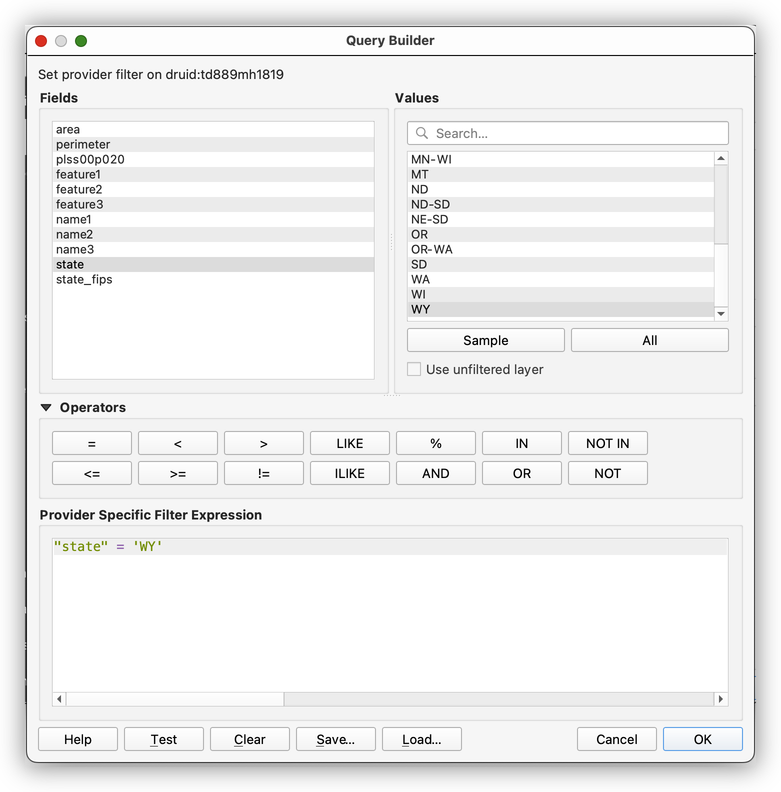
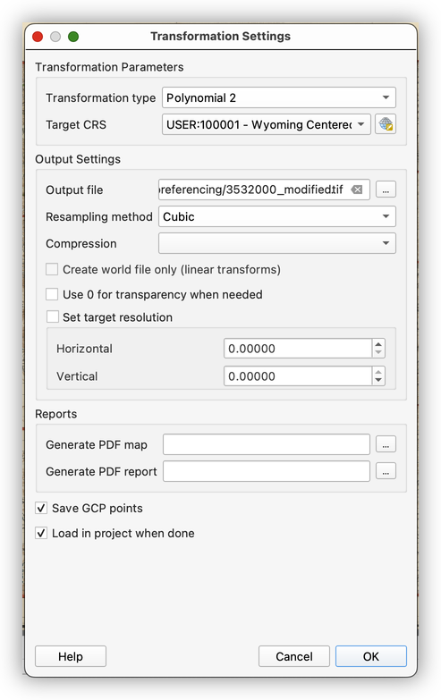

Georeferencing with QGIS and AllMaps.org
Turn-in for grading: This lab includes material that must be turned in for grading. Complete the required deliverables and submit them as instructed by the course.
Overview
In this lab, you will take a scanned historical map and give it spatial coordinates so it can be used in GIS. This process is called georeferencing. A scanned map image, by itself, is just a picture. Once it is georeferenced, it becomes spatial data that can be aligned with vector layers, modern basemaps, and other geographic information.
This is one of the most important workflows in historical GIS, public history, environmental reconstruction, and archival map use. It is how we connect paper maps and scanned images to contemporary spatial analysis.
You will work with:
- A scanned 1900 map of Wyoming from Stanford Library collections
- A Public Land Survey System (PLSS) reference layer from EarthWorks
- QGIS georeferencing tools
Although this lab is titled with AllMaps.org, the workflow below focuses on georeferencing directly in QGIS, which is an important foundational skill. Later, you may compare this desktop workflow with browser-based georeferencing platforms such as AllMaps.
Learning Objectives
By the end of this lab, you should be able to:
- Explain what georeferencing is and why it matters
- Download and organize scanned map imagery and reference data
- Explain why a reference layer is needed for georeferencing
- Subset a reference layer using an attribute filter
- Adjust layer symbology to support visual alignment
- Explain why projection choice matters during georeferencing
- Create and apply a custom CRS for a specific mapping problem
- Explain what ground control points are and why their distribution matters
- Use the QGIS Georeferencer to place control points and transform a scanned map
- Evaluate the visual accuracy of a georeferenced image
Data
This lab uses two source datasets:
Map of the State of Wyoming (1900)
Department Of The Interior General Land Office Hon. Binger Hermann, Commissioner. Map Of The State Of Wyoming.
Stanford record: https://searchworks.stanford.edu/view/10453474Public Land Survey System of the United States, 2010
Stanford EarthWorks record: https://earthworks.stanford.edu/catalog/stanford-td889mh1819
Before You Start
- Create a project folder for this lab and keep all files for the exercise together there.
- Save your QGIS project in the same folder structure as your downloaded data.
- Expect to move back and forth between the main QGIS window and the Georeferencer window.
Important idea: A QGIS project file does not contain your data. It stores paths to your data. Keeping the project file, image, and reference layers together makes the project easier to manage and much less likely to break.
Part 1: Download the Map Image
Download the scanned Wyoming map
- In a browser, go to the Stanford SearchWorks record for the scanned map:
https://searchworks.stanford.edu/view/10453474 - Click the Share icon.

- Choose Download.

- Download the Original source file: https://stacks.stanford.edu/file/mm941rt1648/3532000.jp2

- Save the
3532000.jp2image in your project folder.
What is a
.jp2file?JP2, or JPEG 2000, is a compressed image format commonly used for very large imagery files, including scanned maps and aerial photography.
Part 2: Download the Reference Data
Download PLSS data from EarthWorks
- Go to the EarthWorks record:
https://earthworks.stanford.edu/catalog/stanford-td889mh1819 - Download the Zipped Object to your project folder.
- Unzip the download.

Add the PLSS layer to QGIS
- Open a new QGIS project and save it in your project folder.
- In the Browser panel, browse to your project folder.
- Add
plss00p020.shpto the project.

Why do we need a reference layer? Georeferencing works by matching known locations on the scanned map to known locations in spatial data. The PLSS grid gives us a reference framework we can align the historical map against.
Part 3: Subset the Reference Layer
The PLSS layer covers the entire United States, but we only need the part relevant to Wyoming. Rather than loading the entire reference layer visually, we will filter it.
Use a layer filter
- Open the Attribute Table for
plss00p020.shpand examine the fields. - Notice that the
statefield gives us a convenient way to limit the layer to Wyoming features only.


Build the following filter:
"state" = 'WY'

- Click OK to apply the filter.
- Click OK again to close the Layer Properties window.


Why filter instead of deleting? A filter changes what you see without changing the original dataset. That means you keep the full data file intact while focusing only on the features relevant to your analysis.
Part 4: Prepare the Reference Layer for Georeferencing
Add a basemap
- Add a labeled basemap using the QuickMapServices plugin.
- Choose a basemap that provides useful context and labels.
Adjust PLSS symbology
To use the PLSS layer as a visual reference, we want it to be easy to see without covering everything else.

- Set the fill to Transparent Fill.

- Change the stroke color to something bright and easy to see.


Why use transparent fill? During georeferencing, you usually need to compare multiple visual references at once: the historical image, the reference grid, and often a basemap. A solid polygon fill would hide too much of the map beneath it.
Part 5: Examine the Map and Projection Problem
Before georeferencing, it is worth studying the scanned map itself.
Examine the scanned image
You can examine the image in the SearchWorks viewer here:
https://searchworks.stanford.edu/view/10453474

Compare the top and bottom graticule and think through the following:
- What is the difference between the longitude coordinates at the top and the longitude coordinates at the bottom of the map?
- What do we call the lines of reference that the top and bottom of the map refer to?
- Look at the Wyoming/Montana state line. Does it appear perfectly straight?
- What is the approximate center longitude of Wyoming?
- What is the approximate center latitude?
Use your cursor in QGIS to hover near the center of Wyoming and compare what you see to your answers above.
Why do this first? Good georeferencing is not just clicking points mechanically. It starts with reading the map carefully and noticing how the cartographer represented space.
Part 6: Alter the CRS for the Georeferencing Task
Examine the project CRS
- Click the Project CRS indicator in the bottom-right corner of the QGIS window.

Change the Project CRS to:
USA_Contiguous_Equidistant_ConicESRI:102005Observe what happens to the PLSS grid.


What happened? The PLSS layer is being reprojected on the fly into a projection designed for the contiguous United States as a whole. That projection is not centered specifically on Wyoming, so it is not ideal for this map.
Create a custom projection centered on Wyoming
We want a projection better suited to this specific map.
In the Project CRS properties, copy the Proj4 text for
ESRI:102005:+proj=eqdc +lat_0=39 +lon_0=-96 +lat_1=33 +lat_2=45 +x_0=0 +y_0=0 +ellps=GRS80 +towgs84=0,0,0,0,0,0,0 +units=m +no_defsGo to Settings > Custom Projections.
- Click Add CRS.

Modify the projection parameters so they are centered on Wyoming. Note the bold changes:
+proj=eqdc +lat_0=43 +lon_0=-107.5 +lat_1=37 +lat_2=49 +x_0=0 +y_0=0 +ellps=GRS80 +towgs84=0,0,0,0,0,0,0 +units=m +no_defsPaste the modified Proj4 text into the custom CRS definition.

- Save the custom CRS and apply it.


- Save your project.
Why make a custom CRS? Georeferencing works best when the target projection fits the map you are aligning. A projection centered on Wyoming reduces distortion for this specific use case and gives you a more sensible geometric target.
Part 7: Use the Georeferencer Plugin
Open the Georeferencer
- In QGIS, go to Layer > Georeferencer.

- Load the
3532000.jp2image.


Set transformation settings
- Open the Transformation Settings dialog.

Use the following settings:
Transformation type:
Polynomial 2- Resampling method:
Cubic - Target CRS: your custom Wyoming projection
- Save GCP points
- Load in QGIS when done

What are GCPs? Ground Control Points are matching locations you identify on the scanned map and in real geographic space. The quality and distribution of your GCPs strongly affect the quality of the georeferencing result.
Place control points
- Start by placing points near the corners and center of the image.
- Continue adding points so they are distributed as evenly as possible across the map.
- Use recognizable line intersections, grid crossings, and map features that can be matched confidently.


- Link the Georeferencer and QGIS windows if helpful so you can move between them efficiently.


Control point strategy matters: Do not cluster all your points in one part of the map. Spread them across the full extent so the transformation has support everywhere, not just in one corner.
Run the georeferencing process
- When you have enough well-distributed control points, click Start Georeferencing.

- Let QGIS create the transformed output and load it back into the main project.

- Drag the newly added image below the PLSS layer.
- Check the alignment of the historical map against the PLSS grid and basemap.

Evaluating Your Result
A georeferenced image is rarely "perfect," especially for an old scanned map. What matters is whether the fit is reasonable for the purpose of the project.
Look for:
- Good alignment across the whole image, not just in one area
- Reasonable fit at grid intersections and major boundaries
- No obvious twisting or stretching in one part of the map
- A pattern of error that makes sense, rather than random wild misalignment
Important GIS habit: Always evaluate your result visually and conceptually. Do not assume a tool output is correct just because the software completed successfully.
Turn-In Guidance
Be sure your final QGIS project includes:
- The filtered PLSS reference layer
- The custom Wyoming-centered CRS
- The georeferenced historical image loaded back into QGIS
Submit the lab deliverable as instructed by the course.
Conclusion
In this lab, you took a scanned historical map and turned it into usable spatial data. You:
- Downloaded a scanned map image and a reference dataset
- Filtered the reference data to the state of Wyoming
- Styled the PLSS layer to support visual comparison
- Created a custom CRS suited to the geography of the map
- Used the QGIS Georeferencer to place control points and transform the image
- Evaluated the resulting alignment against modern spatial reference data
This workflow is foundational for historical GIS and archival cartography. Once a scanned map is georeferenced, it can be compared to modern layers, digitized for further analysis, and used as part of larger spatial research workflows.